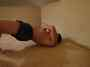

< < < Back
A Primer On The Best Exercise You’re Not Doing – Return Of Kings
I’m Larsen Halleck, and I have a question for you: What if there was an exercise that could heal spinal pain, rejuvenate vertebral discs, add definition and size to muscles most people don’t even know exist, tone the arms and legs, strengthen the toes and ankles, expand lung capacity, and promote circulation?
And, what if variations of this same mythical exercise strengthen the neck, literally making you more difficult to punch out? The answer is: there is one, and it is one of the oldest exercises documented in human cultures: the bridge.
As Yogic Pose And Healing Method
Many ancient peoples, such as those of the Indian Subcontinent were well versed in this exercise. From this book:
“…Strengthens back muscles, tones adrenals, helps kidneys, front part of the body is being stretch entirely, which…may work on their heart chakra…The muscles on the front part of the thighs are stretched and the calves are strengthened while doing and holding the pose… This pose is extremely beneficial for those who sit long hours. The backward bend in the pose relieves tension or stress from the body and help in decreasing the ailments arising out of it. This pose will also help in toning and strengthening the back”
While I have my doubts about some of these claims, I can personally vouch for the usefulness of the bridge for pain relief, as well as strengthening the back and shoulders.
I mastered bridging when I was in my sophomore year of college, at a time when I had never once attempted to deadlift. A year or two later, when I no longer bridged and started to deadlift, I lifted with horrible form, as most people do when they first attempt that exercise. It took me about two months to realize that I was getting persistent lower back pain.
Once I began to bridge again, it took the edge off my back pain. Once I shored up my form, continuing to do rounds of bridging afterwards, I have literally never had any back pain from deadlifting again, and in that timespan I have gone from deadlifting 95 pounds to deadlifting 350 pounds.
Many lifters complain about throwing their backs out, having herniated vertebral discs, and other spinal suffering, but these are fates I have completely avoided, which I attribute to bridging. As a side benefit, bridging gave me these (literally and figuratively) groovy erector spinae muscles snaking up the middle of my back a defined muscle that you will rarely see at the gym.
And needless to say, women find a man that can bend backwards and touch the ground to be mighty sexy.
There’s more benefits to bridging, such as…
Combat Sports, Martial Arts, And General Athletics
“How does this fruity yoga shit help me kick a dude’s ass?!” you might be asking. Plenty of ways…most of which are defensive and preventative in nature.
Many grappling arts, such as wrestling, judo, jiu-jitsu (both traditional and Brazilian), shua jiao, mixed martial arts, etc. extensively bridge, predominantly for escaping pinfalls, extricating oneself from a mounted position, and maneuvering yourself to positions of superiority.
Neck bridging (discussed below) has a more direct application to combat: strengthening your neck keeps your head from flopping around and thus getting concussed (it’s the brain slamming into the inside of the skull that knocks you out, and the neck essentially acts as a lever-a stronger neck means less movement of the lever.) In addition, making your neck stronger gives you a harder headbutt. Training to hold neck bridges for long periods of time trains your mental fortitude as well.
In terms of general athleticism, anybody that is capable of proper-form kip-ups or back handsprings is by definition athletic, and increased explosiveness and coordination won’t hurt your athletic endeavors, whatever they may be.
Learning To Bridge
“I need to learn how to bridge!” you might be saying, “But I’ve never been taught how!”
One of the most damning criticisms I can give to modern fitness training is just stating that nobody bridges, despite the fact that so many ailments of modernity can be solved with regular bridging. Allow me, your knight in “spining” armor, to teach you.
The first bridge you’ll be doing is the static bridge. Lay down on the floor on your back. Put your feet flat with your knees up. Put your hands flat, palm down, near your temples. Now, simultaneously thrust the hips up as you push down on the floor with your hands and feet. Allow your head to go back between your shoulders.

A proper bridge has 4 components: 1) Arms and legs as straight as possible, 2) Arch in the back, 3) Head tilted back in a relaxed position, and 4) Breathing is natural and deep.
If you are incapable of doing a bridge in your first go (most people can’t), then begin with short bridges-laying down, crossing your arms over your chest, and then pushing the legs and hips up without moving the arms.
Ignore the fact that you can’t see my feet.
Once you have mastered that (holding it 10+ seconds) do half bridges. Get in the bridge position, then roll a basketball or soccer ball under your lumbar vertebrae. Then push off the ground just like the true bridge, but it’s easier because you don’t have to lift off all the way from the floor. Once this is mastered, attempt the static bridge again.
When the static bridge is done, work on active bridges. The first of these is the downward wall walk: Stand with your back to a wall, and bend back until your hands touch the wall (palms down, naturally). Then “walk” down the wall on your hands, slowly bending the legs and occasionally stepping forward if needed. If you can’t walk down all the way, go down as far as you can, then stop. Do not twist the back, keep it oriented properly.
Once you accomplish that, walk up the wall.
Next step is an active bridge without the wall-stand up, put your hands on your hips and your feet shoulder width apart. Get on the balls of your feet, thrust the hips forward, and bend back, until you see the floor behind you. Continue bending and place your hands on the floor. Land gently.
And finally, you’re going to stand up from a bridge position-press down hard with both your hands and the balls of your feet, shift the weight forward, and stand yourself up. It’s kind of hard to describe, but it is a highly distinctive feeling. Again, avoid twisting the torso.
From here, you can begin learning back handsprings and kip-ups. But as a word of advice, you will not be capable of doing those without complete mastery of bridging. Work on the steps I’ve given above, and do them to end your day of resistance training.
Neck Bridging
Neck bridging has less variations, but is more painful than standard bridging. As the name implies, the weight is borne entirely on the neck.
You will likely not be able to do neck bridging your first try, so do headstands instead. Then gradually remove your hands from the headstand (ie: remove one hand first, then the other later), and you will have the neckstand. Once you can hold a neckstand for at least 10 seconds, you can try the neck bridge.
Lay down in the standard bridge position, but with your hands off the floor (I put them across my chest). Then, put pressure down on the head and roll back, bearing all the weight upon your scalp and feet (your forehead should almost be touching the floor). Flex the neck muscles to make sure your head goes straight back, and from here you can either hold for time or do repetitions (ie: roll back to the starting position, and then to the bridge position again, keeping the head aligned and straight).

The neck bridge
Conclusion
My suspicion is that if people did 20-30 minutes of bridging just one day a week, back maladies would be halved, no matter how many hours you spend sitting over a computer. Increased mobility, flexibility, endurance, and sex appeal—what other reasons do you need to bridge?
Read More: The Single Most Effective Exercise Any Man Can Do


{kind=link}
{kind=link}
{kind=link}
{kind=link}
{kind=link}
{kind=link}
{kind=link}
{kind=link}
{kind=link}
{kind=link}
{kind=link}
{kind=link}
{kind=link}